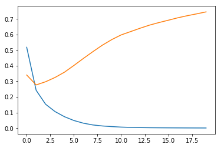

Keras API Basics
The keras API provides an excellent wrapper around various Deep Learning libraries, allowing both ease of use/uniform code while still plugging into expressive backends.
Generally speaking, keras allows two interfaces to the underlying libraries it abstracts:
- Sequential, object-oriented
- Functional, as the name implies
To explain the difference, we’ll make the same Network in both fashions. This will consist of:
- Creating the structure:
- Dense, 32-node layer, that takes input shape 784
- Another 2 Dense 32 layers
- A final Dense 10 layer with a
softmax()activation function
- Compiling the model with the
categorical_crossentropyloss function andadamoptimizer - Printing a summary of our model
Sequential API
from keras import layers
from keras import modelsUsing TensorFlow backend.
model = models.Sequential()
model.add(layers.Dense(32, input_shape=(784,)))
model.add(layers.Dense(32))
model.add(layers.Dense(32))
model.add(layers.Dense(10, activation='softmax'))model.compile(loss='categorical_crossentropy', optimizer='adam')model.summary()_________________________________________________________________
Layer (type) Output Shape Param #
=================================================================
dense_1 (Dense) (None, 32) 25120
_________________________________________________________________
dense_2 (Dense) (None, 32) 1056
_________________________________________________________________
dense_3 (Dense) (None, 32) 1056
_________________________________________________________________
dense_4 (Dense) (None, 10) 330
=================================================================
Total params: 27,562
Trainable params: 27,562
Non-trainable params: 0
_________________________________________________________________
Functional API
Very similar to the Sequential model, but we have to manually specify how layers flow into one another, via the trailing (past_tensor) syntax.
Additionally, we specify which tensors are the first and last in the model– in this case they’re the layers.Input() and layers.Dense(10) objects.
input_tensor = layers.Input(shape=(784,))
x1 = layers.Dense(32, activation='relu')(input_tensor)
x2 = layers.Dense(32, activation='relu')(x1)
output_tensor = layers.Dense(10, activation='softmax')(x2)
model = models.Model(inputs=input_tensor, outputs=output_tensor)model.summary()_________________________________________________________________
Layer (type) Output Shape Param #
=================================================================
input_1 (InputLayer) (None, 784) 0
_________________________________________________________________
dense_5 (Dense) (None, 32) 25120
_________________________________________________________________
dense_6 (Dense) (None, 32) 1056
_________________________________________________________________
dense_7 (Dense) (None, 10) 330
=================================================================
Total params: 26,506
Trainable params: 26,506
Non-trainable params: 0
_________________________________________________________________
Movie Example
Per chapter 3 in Francois Chollet’s Deep Learning with Python book, let’s take a quick look at how to build a simple model using data that comes native with keras.
The imdb dataset is essentially 50k movie reviews, where X is a label-encoded representation of the words in a review, and y is a positive or negative score.
from keras.datasets import imdbnum_words=10000 limits the number of words that we use to represent a review.
(train_data, train_labels), (test_data, test_labels) = imdb.load_data(num_words=10000)Insightful stuff in this review
train_data[0][:10][1, 14, 22, 16, 43, 530, 973, 1622, 1385, 65]
They seemed to like the movie
train_labels[0]1
keras.datasets.imdb comes pre-loaded with a dictionary to help decode the X representations of reviews. With some clever dict magic, we can reconstruct what the original review read, more or less.
Note: The 0, 1, 2 indexes are used for “padding”, “start of sequence” and “unknown”, hence the -3 in the get() function
word_index = imdb.get_word_index()
reverse_word_index = {idx: word for word, idx in word_index.items()}
decoded_review = ' '.join(reverse_word_index.get(idx - 3, '?') for idx in train_data[0])
decoded_review"? this film was just brilliant casting location scenery story direction everyone's really suited the part they played and you could just imagine being there robert ? is an amazing actor and now the same being director ? father came from the same scottish island as myself so i loved the fact there was a real connection with this film the witty remarks throughout the film were great it was just brilliant so much that i bought the film as soon as it was released for ? and would recommend it to everyone to watch and the fly fishing was amazing really cried at the end it was so sad and you know what they say if you cry at a film it must have been good and this definitely was also ? to the two little boy's that played the ? of norman and paul they were just brilliant children are often left out of the ? list i think because the stars that play them all grown up are such a big profile for the whole film but these children are amazing and should be praised for what they have done don't you think the whole story was so lovely because it was true and was someone's life after all that was shared with us all"
Taking this one step further, though, we want to be able to translate our 1 x numWords observations into hot-encoded matricies that are consumable by a Neural Network.
import numpy as np
def vectorize_sequences(sequences, dimension=10000):
results = np.zeros((len(sequences), dimension))
for i, sequence in enumerate(sequences):
results[i, sequence] = 1.
return resultsx_train = vectorize_sequences(train_data)
x_test = vectorize_sequences(test_data)x_train.shape(25000, 10000)
Much better
x_train[0]array([ 0., 1., 1., ..., 0., 0., 0.])
The transformation on y is trivial. Just list to np.array.
y_train = np.asarray(train_labels).astype('float32')
y_test = np.asarray(test_labels).astype('float32')Reusing the Sequential() architecture as above.
model = models.Sequential()
model.add(layers.Dense(32, activation='relu', input_shape=(10000,)))
model.add(layers.Dense(32, activation='relu'))
model.add(layers.Dense(1, activation='sigmoid'))Note that we specify that we want the accuracy metric (more on this in a sec)
model.compile(optimizer='adam',
loss='binary_crossentropy',
metrics=['accuracy'])We split our x_train and y_train again in order to generate some cross-validation data
x_val = x_train[:10000]
partial_x_train = x_train[10000:]
y_val = y_train[:10000]
partial_y_train = y_train[10000:]By passing x_val, y_val, we can do some cross-validation on the fly.
Note that we assign the output of model.fit() to history
history = model.fit(partial_x_train, partial_y_train,
epochs=20, batch_size=512,
validation_data=(x_val, y_val))Train on 15000 samples, validate on 10000 samples
Epoch 1/20
15000/15000 [==============================] - 3s 176us/step - loss: 0.5184 - acc: 0.7785 - val_loss: 0.3404 - val_acc: 0.8718
Epoch 2/20
15000/15000 [==============================] - 2s 143us/step - loss: 0.2426 - acc: 0.9129 - val_loss: 0.2770 - val_acc: 0.8911
Epoch 3/20
15000/15000 [==============================] - 2s 146us/step - loss: 0.1533 - acc: 0.9473 - val_loss: 0.2972 - val_acc: 0.8829
Epoch 4/20
15000/15000 [==============================] - 2s 147us/step - loss: 0.1063 - acc: 0.9669 - val_loss: 0.3246 - val_acc: 0.8811
Epoch 5/20
15000/15000 [==============================] - 2s 149us/step - loss: 0.0734 - acc: 0.9817 - val_loss: 0.3586 - val_acc: 0.8767
Epoch 6/20
15000/15000 [==============================] - 2s 145us/step - loss: 0.0489 - acc: 0.9905 - val_loss: 0.4016 - val_acc: 0.8783
Epoch 7/20
15000/15000 [==============================] - 2s 147us/step - loss: 0.0319 - acc: 0.9949 - val_loss: 0.4464 - val_acc: 0.8742
Epoch 8/20
15000/15000 [==============================] - 2s 145us/step - loss: 0.0206 - acc: 0.9977 - val_loss: 0.4896 - val_acc: 0.8719
Epoch 9/20
15000/15000 [==============================] - 2s 143us/step - loss: 0.0140 - acc: 0.9994 - val_loss: 0.5310 - val_acc: 0.8700
Epoch 10/20
15000/15000 [==============================] - 2s 143us/step - loss: 0.0100 - acc: 0.9998 - val_loss: 0.5670 - val_acc: 0.8692
Epoch 11/20
15000/15000 [==============================] - 2s 145us/step - loss: 0.0067 - acc: 0.9999 - val_loss: 0.5972 - val_acc: 0.8677
Epoch 12/20
15000/15000 [==============================] - 2s 145us/step - loss: 0.0048 - acc: 0.9999 - val_loss: 0.6185 - val_acc: 0.8693
Epoch 13/20
15000/15000 [==============================] - 2s 145us/step - loss: 0.0037 - acc: 0.9999 - val_loss: 0.6399 - val_acc: 0.8678
Epoch 14/20
15000/15000 [==============================] - 2s 144us/step - loss: 0.0029 - acc: 0.9999 - val_loss: 0.6599 - val_acc: 0.8687
Epoch 15/20
15000/15000 [==============================] - 2s 145us/step - loss: 0.0024 - acc: 0.9999 - val_loss: 0.6764 - val_acc: 0.8679
Epoch 16/20
15000/15000 [==============================] - 2s 145us/step - loss: 0.0020 - acc: 0.9999 - val_loss: 0.6914 - val_acc: 0.8675
Epoch 17/20
15000/15000 [==============================] - 2s 144us/step - loss: 0.0017 - acc: 0.9999 - val_loss: 0.7069 - val_acc: 0.8669
Epoch 18/20
15000/15000 [==============================] - 2s 146us/step - loss: 0.0014 - acc: 1.0000 - val_loss: 0.7203 - val_acc: 0.8672
Epoch 19/20
15000/15000 [==============================] - 2s 145us/step - loss: 0.0012 - acc: 1.0000 - val_loss: 0.7322 - val_acc: 0.8671
Epoch 20/20
15000/15000 [==============================] - 2s 145us/step - loss: 0.0011 - acc: 1.0000 - val_loss: 0.7448 - val_acc: 0.8669
We can now access the history values of history (lol)
history_dict = history.historyhistory_dict.keys()dict_keys(['val_loss', 'val_acc', 'loss', 'acc'])
This allows us to look at performance over training time
%pylab inline
epochs = range(len(history_dict['loss']))Populating the interactive namespace from numpy and matplotlib
plt.plot(epochs, history_dict['loss'])
plt.plot(epochs, history_dict['val_loss'])[<matplotlib.lines.Line2D at 0x17a4c4cf358>]
